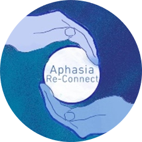

I am a first-year PhD candidate within the Department of Informatics at King's College London. I am part of the Human Centred Computing Research group.
I am supervised by Dr Timothy Neate.
My research focuses upon wearable, discreet augmentative and alternative communciation.
Please donate, volunteer and support Aphasia Re-Connect.
Social Media:
My Details:
Humphrey Curtis
Department of Informatics
King's College London
30 Aldwych
London
WC2B 4BG
